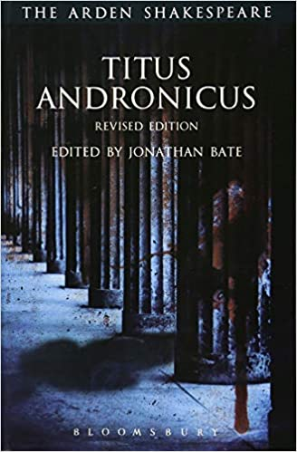
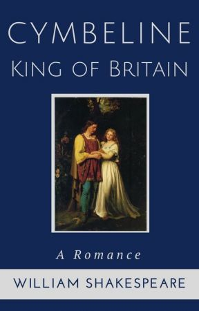

William Shakespeare, İngiliz şair, oyun yazarı ve oyuncu. Çoklukla İngilizce dilinin en büyük yazarı ve dünyanın en iyi oyun yazarı olarak anılır. İngiltere'nin ulusal şairi ve "Avon'un Ozanı" olarak da bilinir. Günümüze ulaşan eserleri, bazı ortaklaşa yazılanlarla birlikte 38 oyun, 154 sone, iki uzun öykü şiir ve birkaç diğer kaynağı belirsiz şiirlerden oluşur. Oyunları bütün büyük dillere çevrildi ve diğer bütün oyun yazarlarından daha çok sergilendi.

HAYATI
Çocukluğu
William Shakespeare, aslen Snitterfield'lı olan belediye meclisi üyesi ve başarılı bir deri eşya tüccarı John Shakespeare ve varlıklı toprak sahibi bir çiftçinin kızı Mary Arden'ın oğluydu. Stratford-upon-Avon'da doğdu ve burada 26 Nisan 1564'te vaftiz edildi. Gerçek doğum günü bilinmemektedir, ancak geleneksel olarak 23 Nisan'da, Đurđevdan'da doğduğu söylenir. 18. yüzyıl bilgininin hatasına dayandırılan bu tarih, Shakespeare 23 Nisan 1616'da öldüğünden beri, biyografi yazarlarına cazip gelmiştir. Sekiz çocuğun üçüncüsüydü ve hayatta kalan en büyük çocuktu. Geriye kalan bir kanıt olmamasına rağmen, çoğu biyografi yazarı Shakespeare'in büyük ihtimalle Stratford'da, evine yaklaşık 400 metre uzaklıkta olan ve 1553'te açılan ücretsiz okul King's New School'da okuduğu konusunda anlaşmaktadır. İngiltere'deki ilkokullar Elizabeth Çağı süresince kalitede çeşitlilik göstermiştir, ama ilkokul müfredatı tüm İngiltere'de kraliyet kararnamesiyle standartlaştırılmıştı ve okul klasik Latin yazarları üzerine dayalı olarak Latince yoğun bir eğitim sağlamaktaydı
Gençliği
18 yaşındayken, Shakespeare 26 yaşındaki Anne Hathaway ile evlendi. Worcester Anglikan Psikoposluğu kardinalleri mahkemesi 27 Kasım 1582'de bir evlilik cüzdanı yayınladı. Bir gün sonra Hathaway'in iki komşusu, hiçbir hukuki iddianın evliliği engellemediğini garantileyen senetler yolladı. Worcester şansölyesinin evlenme ilânına olağan üç kere okunması yerine bir kere okunmasına izin vermesinden, ve evliliklerinden altı ay sonra, 26 Mayıs 1583'te vaftiz edilen kızları Susanna'nın doğmasından ötürü, törenin biraz aceleyle düzenlenmiş olma olasılığı vardır. Bunu yaklaşık iki ay sonra ikizler, erkek Hamnet ve kız Judith izledi ve 2 Şubat 1585'te vaftiz edildiler. Hamnet bilinmeyen nedenlerden dolayı 11 yaşında öldü ve 11 Ağustos 1596'da gömüldü.
İkizlerin doğumundan sonra, 1592'de Londra tiyatro sahnesinin bir parçası olarak anılana kadar, Shakespeare tarihe geçen birkaç iz bıraktı, ve bilginler 1585 ile 1592 arasındaki yıllara Shakespeare'in "kayıp yılları" olarak değindiler. Bu dönemi açıklama girişiminde bulunan biyografi yazarları doğruluğu şüpheli birçok hikâye anlattı. Shakespeare hakkında biyografi yazan ilk kişi Nicholas Rowe, Thomas Lucy'nin mülkünde kaçak geyik avcılığı davasından kaçmak için Shakespeare'in Londra'ya gitmek üzere kasabayı terk ettiği bir Stratford efsanesi ortaya attı. Shakespeare'in ayrıca hakkında küfürlü bir balad yazarak Lucy'den intikam aldığı düşünülür. Bir başka 18. yüzyıl hikâyesi Londra'daki tiyatro müşterilerinin atlarına bakıcılık yaparken tiyatro kariyerine başlayan Shakespeare üzerinedir. John Aubrey ise Shakespeare'in öğretmenlik yaptığını iddia etmiştir. Bazı 20. yüzyıl bilginleri, vasiyetinde kesin olarak "William Shakeshafte" şeklinde bahseden Katolik toprak sahibi Lancashire'lı Alexander Hoghton'ın, Shakespeare'i öğretmen olarak görevlendirdiğini öne sürdü. Küçük bir bulgu, ölümünden sonra bir araya getirilen söylentiler dışındaki çoğu hikâyeyi doğrulamaktadır, ve Shakeshafte, Lancashire bölgesinde yaygın bir isimdi.
kariyeri
Bilginler bu sözcüklerin tam olarak ne ifade ettiği konusunda anlaşamamaktadır, ama çoğunluğunun katıldığı düşünce, onu Christopher Marlowe, Thomas Nashe ve Greene'nin kendisi gibi üniversite mezunu yazarlara benzemeye çalışırken kendi seviyesini geçmesiyle suçladığıdır. "Shake-scene" kelime oyunu ile birlikte, eğik olarak yazılmış, Shakespeare'in VI. Henry, Bölüm 3 eserinden "Ah, bir kadının derisine bürünmüş kaplanın kalbi" cümlesinin taklidinin yapıldığı ifade, Shakespeare'i Greene'nin hedefi olarak belirlemiştir. Buradaki Johannes Factotum—"her işi biraz bilen" daha yaygın olan "evrensel deha"dan ziyade, başkalarının çalışmalarıyla ikinci sınıf bir tamirciyi kasteder.
Greene'nin saldırısı, günümüze ulaşanlar arasında Shakespeare’in tiyatrodaki kariyerinden bahseden ilk kayıttır. Biyografi yazarları, kariyerinin 1580'lerin ortalarından Greene'nin sözlerinden hemen öncesine kadar olan süreçte başlamış olabileceğini ileri sürmektedir. 1594'ten sonra Shakespeare'in oyunları sadece, Shakespeare'in de dâhil olduğu bir grup oyuncuya ait, kısa süre sonra Londra'nın ileri gelen tiyatro şirketi olacak olan Lord Chamberlain's Men tarafından sergilendi. Kraliçe Elizabeth'in 1603'teki ölümünden sonra şirket, yeni kral I. James tarafından royal bir patent ile ödüllendirildi, ve ismi King's Men şeklinde değiştirildi.
1599'da, şirket üyelerinin ortakları Thames Nehri'nin güney kıyısında Globe adını verdikleri, kendi tiyatrolarını inşa ettiler. 1608'de, ortaklar ayrıca Blackfriars kapalı tiyatrosunu devraldı. Shakespeare'in gayrimenkul alım ve yatırımlarına dair kayıtlar, şirketin onu varlıklı bir adam yaptığını göstermektedir. 1597'de, Stratford'da New Place adındaki ikinci büyük evini satın aldı, ve 1605'te, Stratford'da kilise ondalık vergilerinde pay sahibi oldu.
Shakespeare'in oyunlarının bazıları 1594'ten itibaren çeyrek boy baskılarda yayımlandı. 1598 ile, ismi bir satış noktası oldu ve baş sayfalarda görünmeye başladı. Shakespeare, bir oyun yazarı olarak başarısından sonra kendinin ve başkalarının oyunlarında oynamaya devam etti. Ben Jonson'ın 1616 baskısı Works, Sheakespeare'in, Every Man in His Humour (1598) ve Sejanus His Fall (1603) oyunlarının oyuncu listelerinde olduğunu belirtir. İsminin, Jonson’ın 1605'teki Volpone oyununun listesinde yokluğu, bazı bilginler tarafından oyunculuk kariyerinin sona yaklaştığının bir işareti olarak görüldü. Yine de, 1623'teki Birinci Folyo, Shakespeare'i "tüm bu Oyunlardaki Başlıca Aktörler"den, Volpone'dan sonra ilk sahneye çıkanlardan biri olarak listeler, ancak hangi rollerde oynadığı kesin olarak bilinememektedir. 1610'da, John Davies, "iyi Will"in "kral gibi" rollerde oynadığını yazdı. 1709'da Rowe, Shakespeare'in, Hamlet'in babasının hayaletini oynadığı bir geleneğin nesilden nesile geçmesini sağladı.
Shakespeare'in oyunlarının bazıları 1594'ten itibaren çeyrek boy baskılarda yayımlandı. 1598 ile, ismi bir satış noktası oldu ve baş sayfalarda görünmeye başladı. Shakespeare, bir oyun yazarı olarak başarısından sonra kendinin ve başkalarının oyunlarında oynamaya devam etti. Ben Jonson'ın 1616 baskısı Works, Sheakespeare'in, Every Man in His Humour (1598) ve Sejanus His Fall (1603) oyunlarının oyuncu listelerinde olduğunu belirtir. İsminin, Jonson’ın 1605'teki Volpone oyununun listesinde yokluğu, bazı bilginler tarafından oyunculuk kariyerinin sona yaklaştığının bir işareti olarak görüldü. Yine de, 1623'teki Birinci Folyo, Shakespeare'i "tüm bu Oyunlardaki Başlıca Aktörler"den, Volpone'dan sonra ilk sahneye çıkanlardan biri olarak listeler, ancak hangi rollerde oynadığı kesin olarak bilinememektedir. 1610'da, John Davies, "iyi Will"in "kral gibi" rollerde oynadığını yazdı. 1709'da Rowe, Shakespeare'in, Hamlet'in babasının hayaletini oynadığı bir geleneğin nesilden nesile geçmesini sağladı.
Ölümü
Rowe, Shakespeare'in ölümünden önceki birkaç yıl emekli olarak Stratford'da yaşadığını; ama sadece o zamanda yaygın olmayan işleri bıraktığını, ve Shakespeare'in Londra'yı ziyaret etmeye devam ettiğini nesilden nesile aktaran ilk biyografi yazarıydı. 1612'de Shakespeare, Mountjoy'un kızı Mary'nin evlilik anlaşması hakkında bir dava olan Bellott v. Mountjoy'un bir tanığı olarak anılıyordu. Mart 1613'te eski Blackfriars manastırında bir geçit ev satın aldı; ve Kasım 1614'ten itibaren birkaç hafta üvey oğlu John Hall ile Londra'da kaldı. 1606–1607'den sonra, Shakespeare daha az oyun yazdı, ve 1613'ten sonra hiçbiri ona atfedilmedi. Son üç oyununu, ondan sonra King’s Men'in oyun yazarı olan John Fletcher ile ortak yazdığı tahmin edilmektedir.
Shakespeare 23 Nisan 1616'da, 52 yaşında, eşini ve iki kızını geride bırakarak yaşamını yitirdi. Susanna 1607'de bir hekim olan John Hall ile evlendi, Judith ise Shakespeare’in ölümünden iki ay önce bir şarap tüccarı olan Thomas Quiney ile evlendi. Vasiyetinde, Shakespeare büyük kızı Susanna'ya bir servet yığını bıraktı. Quineylerin üç çocuğu vardı, bunların hepsi evlenmeden öldü. Hall ailesinin ise Elizabeth adında bir çocuğu vardı, Elizabeth iki kere evlendi ancak hiç çocuğu olmadan, Shakespeare'in doğrudan gelen soyunu bitirerek 1670'te öldü. Shakespeare'in vasiyeti karısı Anne'den neredeyse hiç bahsetmez, büyük olasılıkla Anne'in hakkı otomatik olarak mirasının üçte biriydi. Yine de, ona birçok spekülasyona yol açan "en iyi ikinci yatağım" kalıtını bırakmasıyla dikkati çekti. Bazı bilginler kalıtı Anne'e bir hakaret olarak görürken, diğerleri ikinci en iyi yatağın evlilik yatağı olduğuna ve bu yüzden anlamının büyük olduğuna inanır.
Shakespeare, ölümünden iki gün sonra Holy Trinity Kilisesinin chancel'ine gömülmüştür. Taş levha ile oyulan kitabesi, kilisenin 2008'deki restorasyonu süresince özenle kaçınılan kemiklerinin yer değiştirmesi durumuna karşı mezarını örten bir lanet içerir. 1623'ten önceki bir zamanda, anısına Shakespeare'in yazma eyleminde yarı-büstü olan bir anıt mezar dikildi. Plakası onu Nestor, Sokrates, ve Virgil ile karşılaştırır. 1623'te, Birinci Folyo'nun yayımıyla birlikte, Droeshout Portresi de basıldı. Shakespeare tüm dünyada Southwark Katedrali'ndeki anıt mezarlar ve Westminster Abbey'deki Poets' Corner dâhil pek çok heykel ve anıtla anılmıştır.
ESERLERİ
TRAJEDİLERİ
 |
 | |||||||
 |
KOMEDİLERİ
 |
 |
 |
 |  |
|||
 |
|||||||
 |
TARİHSEL OYUNLARI
 |
 |
 |
 |
 |
 |
 |
ŞİİRLERİ
 |
İLETİŞİM
 |
William_Shakespeare |
 |
William Shakespeare |
||
William_Shakespeare |
 |
William Shakespeare |